In [4]:
%load_ext autoreload
%autoreload 2
%matplotlib inline
import random
random.seed(13847942484)
import survivalstan
import numpy as np
import pandas as pd
from stancache import stancache
from matplotlib import pyplot as plt
INFO:stancache.seed:Setting seed to 1245502385
The autoreload extension is already loaded. To reload it, use:
%reload_ext autoreload
In [5]:
print(survivalstan.models.pem_survival_model_timevarying)
/* Variable naming:
// dimensions
N = total number of observations (length of data)
S = number of sample ids
T = max timepoint (number of timepoint ids)
M = number of covariates
// data
s = sample id for each obs
t = timepoint id for each obs
event = integer indicating if there was an event at time t for sample s
x = matrix of real-valued covariates at time t for sample n [N, X]
obs_t = observed end time for interval for timepoint for that obs
*/
// Jacqueline Buros Novik <jackinovik@gmail.com>
functions {
matrix spline(vector x, int N, int H, vector xi, int P) {
matrix[N, H + P] b_x; // expanded predictors
for (n in 1:N) {
for (p in 1:P) {
b_x[n,p] <- pow(x[n],p-1); // x[n]^(p-1)
}
for (h in 1:H)
b_x[n, h + P] <- fmax(0, pow(x[n] - xi[h],P-1));
}
return b_x;
}
}
data {
// dimensions
int<lower=1> N;
int<lower=1> S;
int<lower=1> T;
int<lower=0> M;
// data matrix
int<lower=1, upper=N> s[N]; // sample id
int<lower=1, upper=T> t[N]; // timepoint id
int<lower=0, upper=1> event[N]; // 1: event, 0:censor
matrix[N, M] x; // explanatory vars
// timepoint data
vector<lower=0>[T] t_obs;
vector<lower=0>[T] t_dur;
}
transformed data {
vector[T] log_t_dur;
int n_trans[S, T];
log_t_dur = log(t_obs);
// n_trans used to map each sample*timepoint to n (used in gen quantities)
// map each patient/timepoint combination to n values
for (n in 1:N) {
n_trans[s[n], t[n]] = n;
}
// fill in missing values with n for max t for that patient
// ie assume "last observed" state applies forward (may be problematic for TVC)
// this allows us to predict failure times >= observed survival times
for (samp in 1:S) {
int last_value;
last_value = 0;
for (tp in 1:T) {
// manual says ints are initialized to neg values
// so <=0 is a shorthand for "unassigned"
if (n_trans[samp, tp] <= 0 && last_value != 0) {
n_trans[samp, tp] = last_value;
} else {
last_value = n_trans[samp, tp];
}
}
}
}
parameters {
vector[T] log_baseline_raw; // unstructured baseline hazard for each timepoint t
real<lower=0> baseline_sigma;
real log_baseline_mu;
vector[M] beta; // beta-intercept
vector<lower=0>[M] beta_time_sigma;
vector[T-1] raw_beta_time_deltas[M]; // for each coefficient
// change in coefficient value from previous time
}
transformed parameters {
vector[N] log_hazard;
vector[T] log_baseline;
vector[T] beta_time[M];
vector[T] beta_time_deltas[M];
// adjust baseline hazard for duration of each period
log_baseline = log_baseline_raw + log_t_dur;
// compute timepoint-specific betas
// offsets from previous time
for (coef in 1:M) {
beta_time_deltas[coef][1] = 0;
for (time in 2:T) {
beta_time_deltas[coef][time] = raw_beta_time_deltas[coef][time-1];
}
}
// coefficients for each timepoint T
for (coef in 1:M) {
beta_time[coef] = beta[coef] + cumulative_sum(beta_time_deltas[coef]);
}
// compute log-hazard for each obs
for (n in 1:N) {
real log_linpred;
log_linpred <- 0;
for (coef in 1:M) {
// for now, handle each coef separately
// (to be sure we pull out the "right" beta..)
log_linpred = log_linpred + x[n, coef] * beta_time[coef][t[n]];
}
log_hazard[n] = log_baseline_mu + log_baseline[t[n]] + log_linpred;
}
}
model {
// priors on time-varying coefficients
for (m in 1:M) {
raw_beta_time_deltas[m][1] ~ normal(0, 100);
for(i in 2:(T-1)){
raw_beta_time_deltas[m][i] ~ normal(raw_beta_time_deltas[m][i-1], beta_time_sigma[m]);
}
}
beta_time_sigma ~ cauchy(0, 1);
beta ~ cauchy(0, 1);
// priors on baseline hazard
log_baseline_mu ~ normal(0, 1);
baseline_sigma ~ normal(0, 1);
log_baseline_raw[1] ~ normal(0, 1);
for (i in 2:T) {
log_baseline_raw[i] ~ normal(log_baseline_raw[i-1], baseline_sigma);
}
// model
event ~ poisson_log(log_hazard);
}
generated quantities {
real log_lik[N];
vector[T] baseline;
int y_hat_mat[S, T]; // ppcheck for each S*T combination
real y_hat_time[S]; // predicted failure time for each sample
int y_hat_event[S]; // predicted event (0:censor, 1:event)
// compute raw baseline hazard, for summary/plotting
baseline = exp(log_baseline_raw);
// log_likelihood for loo-psis
for (n in 1:N) {
log_lik[n] <- poisson_log_lpmf(event[n] | log_hazard[n]);
}
// posterior predicted values
for (samp in 1:S) {
int sample_alive;
sample_alive = 1;
for (tp in 1:T) {
if (sample_alive == 1) {
int n;
int pred_y;
real log_linpred;
real log_haz;
// determine predicted value of y
n = n_trans[samp, tp];
// (borrow code from above to calc linpred)
// but use sim tp not t[n]
log_linpred = 0;
for (coef in 1:M) {
// for now, handle each coef separately
// (to be sure we pull out the "right" beta..)
log_linpred = log_linpred + x[n, coef] * beta_time[coef][tp];
}
log_haz = log_baseline_mu + log_baseline[tp] + log_linpred;
// now, make posterior prediction
if (log_haz < log(pow(2, 30)))
pred_y = poisson_log_rng(log_haz);
else
pred_y = 9;
// mark this patient as ineligible for future tps
// note: deliberately make 9s ineligible
if (pred_y >= 1) {
sample_alive = 0;
y_hat_time[samp] = t_obs[tp];
y_hat_event[samp] = 1;
}
// save predicted value of y to matrix
y_hat_mat[samp, tp] = pred_y;
}
else if (sample_alive == 0) {
y_hat_mat[samp, tp] = 9;
}
} // end per-timepoint loop
// if patient still alive at max
//
if (sample_alive == 1) {
y_hat_time[samp] = t_obs[T];
y_hat_event[samp] = 0;
}
} // end per-sample loop
}
In [6]:
d = stancache.cached(
survivalstan.sim.sim_data_exp_correlated,
N=100,
censor_time=20,
rate_form='1 + sex',
rate_coefs=[-3, 0.5],
)
d['age_centered'] = d['age'] - d['age'].mean()
d.head()
INFO:stancache.stancache:sim_data_exp_correlated: cache_filename set to sim_data_exp_correlated.cached.N_100.censor_time_20.rate_coefs_54462717316.rate_form_1 + sex.pkl
INFO:stancache.stancache:sim_data_exp_correlated: Loading result from cache
Out[6]:
| age | sex | rate | true_t | t | event | index | age_centered | |
|---|---|---|---|---|---|---|---|---|
| 0 | 59 | male | 0.082085 | 20.948771 | 20.000000 | False | 0 | 4.18 |
| 1 | 58 | male | 0.082085 | 12.827519 | 12.827519 | True | 1 | 3.18 |
| 2 | 61 | female | 0.049787 | 27.018886 | 20.000000 | False | 2 | 6.18 |
| 3 | 57 | female | 0.049787 | 62.220296 | 20.000000 | False | 3 | 2.18 |
| 4 | 55 | male | 0.082085 | 10.462045 | 10.462045 | True | 4 | 0.18 |
In [7]:
survivalstan.utils.plot_observed_survival(df=d[d['sex']=='female'], event_col='event', time_col='t', label='female')
survivalstan.utils.plot_observed_survival(df=d[d['sex']=='male'], event_col='event', time_col='t', label='male')
plt.legend()
Out[7]:
<matplotlib.legend.Legend at 0x7f6f245cc550>
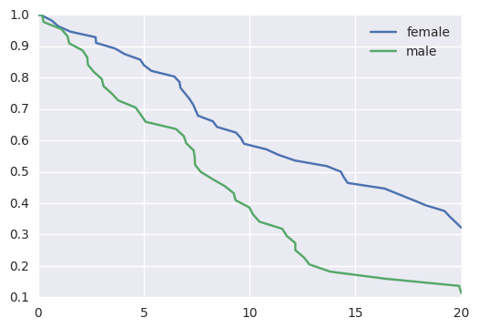
In [8]:
dlong = stancache.cached(
survivalstan.prep_data_long_surv,
df=d, event_col='event', time_col='t'
)
dlong.sort_values(['index', 'end_time'], inplace=True)
INFO:stancache.stancache:prep_data_long_surv: cache_filename set to prep_data_long_surv.cached.df_33772694934.event_col_event.time_col_t.pkl
INFO:stancache.stancache:prep_data_long_surv: Loading result from cache
In [9]:
dlong.head()
Out[9]:
| age | sex | rate | true_t | t | event | index | age_centered | key | end_time | end_failure | |
|---|---|---|---|---|---|---|---|---|---|---|---|
| 62 | 59 | male | 0.082085 | 20.948771 | 20.0 | False | 0 | 4.18 | 1 | 0.118611 | False |
| 3 | 59 | male | 0.082085 | 20.948771 | 20.0 | False | 0 | 4.18 | 1 | 0.196923 | False |
| 61 | 59 | male | 0.082085 | 20.948771 | 20.0 | False | 0 | 4.18 | 1 | 0.262114 | False |
| 71 | 59 | male | 0.082085 | 20.948771 | 20.0 | False | 0 | 4.18 | 1 | 0.641174 | False |
| 26 | 59 | male | 0.082085 | 20.948771 | 20.0 | False | 0 | 4.18 | 1 | 0.944220 | False |
In [10]:
testfit = survivalstan.fit_stan_survival_model(
model_cohort = 'test model',
model_code = survivalstan.models.pem_survival_model_timevarying,
df = dlong,
sample_col = 'index',
timepoint_end_col = 'end_time',
event_col = 'end_failure',
formula = '~ age_centered + sex',
iter = 10000,
chains = 4,
seed = 9001,
FIT_FUN = stancache.cached_stan_fit,
)
INFO:stancache.stancache:Step 1: Get compiled model code, possibly from cache
INFO:stancache.stancache:StanModel: cache_filename set to anon_model.cython_0_25_1.model_code_9304163442804524267.pystan_2_12_0_0.stanmodel.pkl
INFO:stancache.stancache:StanModel: Loading result from cache
INFO:stancache.stancache:Step 2: Get posterior draws from model, possibly from cache
INFO:stancache.stancache:sampling: cache_filename set to anon_model.cython_0_25_1.model_code_9304163442804524267.pystan_2_12_0_0.stanfit.chains_4.data_75232070308.iter_10000.seed_9001.pkl
INFO:stancache.stancache:sampling: Loading result from cache
/home/jacquelineburos/miniconda3/envs/python3/lib/python3.5/site-packages/stanity/psis.py:228: FutureWarning: elementwise comparison failed; returning scalar instead, but in the future will perform elementwise comparison
elif sort == 'in-place':
/home/jacquelineburos/miniconda3/envs/python3/lib/python3.5/site-packages/stanity/psis.py:246: VisibleDeprecationWarning: using a non-integer number instead of an integer will result in an error in the future
bs /= 3 * x[sort[np.floor(n/4 + 0.5) - 1]]
/home/jacquelineburos/miniconda3/envs/python3/lib/python3.5/site-packages/stanity/psis.py:262: RuntimeWarning: overflow encountered in exp
np.exp(temp, out=temp)
superficial check of convergence¶
In [11]:
survivalstan.utils.print_stan_summary([testfit], pars='lp__')
mean se_mean sd 2.5% 50% 97.5% Rhat
lp__ 407.328012 15.738683 101.998321 214.786192 407.532163 606.393469 1.059665
In [12]:
survivalstan.utils.plot_stan_summary([testfit], pars='log_baseline')
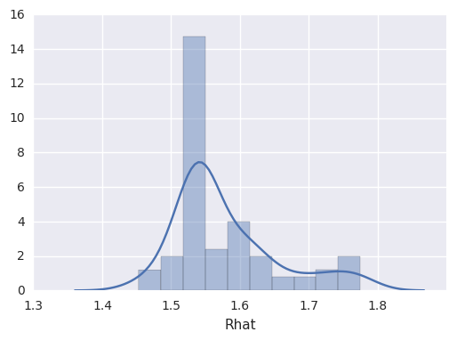
summarize coefficient estimates¶
In [13]:
survivalstan.utils.plot_coefs([testfit], element='baseline')
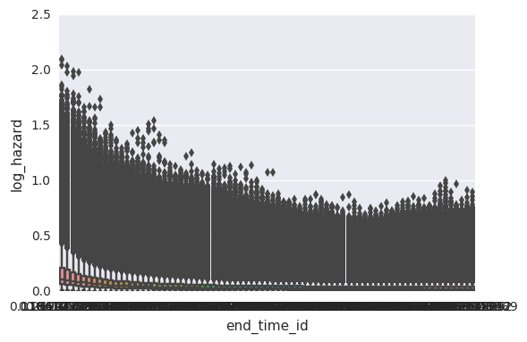
In [14]:
survivalstan.utils.plot_coefs([testfit])
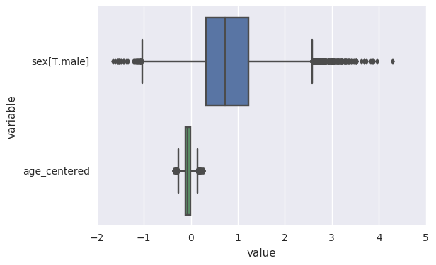
posterior-predictive checks¶
In [15]:
survivalstan.utils.plot_pp_survival([testfit], fill=False)
survivalstan.utils.plot_observed_survival(df=d, event_col='event', time_col='t', color='green', label='observed')
plt.legend()
Out[15]:
<matplotlib.legend.Legend at 0x7f6f0407b630>
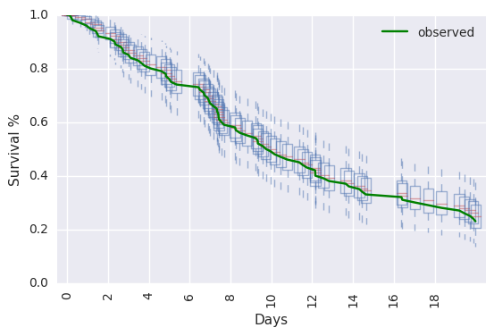
In [16]:
survivalstan.utils.plot_pp_survival([testfit], by='sex')
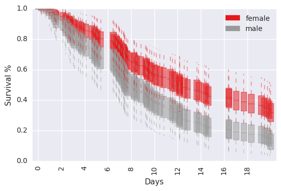
In [23]:
survivalstan.utils.plot_pp_survival([testfit], by='sex', pal=['red', 'blue'])
summarize time-varying effect of sex on survival¶
Standard behavior is to plot estimated betas at each timepoint, for each coefficient in the model.
In [31]:
survivalstan.utils.plot_coefs([testfit], element='beta_time', ylim=[-1, 2.5])
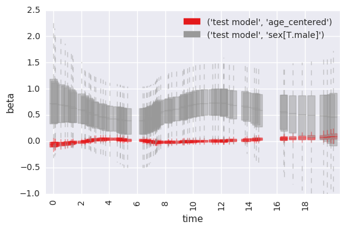
accessing lower-level functions for plotting effects over time¶
In [26]:
survivalstan.utils.plot_time_betas(models=[testfit], by=['coef'], y='exp(beta)', ylim=[0, 10])
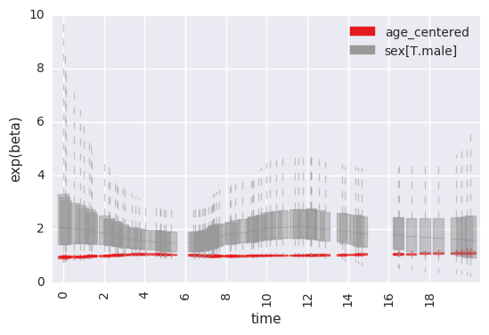
Alternatively, you can extract the beta-estimates for each timepoint & plot them yourself.
In [27]:
testfit['time_beta'] = survivalstan.utils.extract_time_betas([testfit])
testfit['time_beta'].head()
Out[27]:
| timepoint_id | beta | coef | end_time | exp(beta) | model_cohort | |
|---|---|---|---|---|---|---|
| 0 | 1 | 0.281855 | sex[T.male] | 0.118611 | 1.325587 | test model |
| 1 | 1 | 1.263018 | sex[T.male] | 0.118611 | 3.536076 | test model |
| 2 | 1 | 0.875265 | sex[T.male] | 0.118611 | 2.399512 | test model |
| 3 | 1 | 0.128097 | sex[T.male] | 0.118611 | 1.136664 | test model |
| 4 | 1 | 0.185878 | sex[T.male] | 0.118611 | 1.204276 | test model |
You can also extract and/or plot data for single coefficients of interest at a time.
In [28]:
first_beta = survivalstan.utils.extract_time_betas([testfit], coefs=['sex[T.male]'])
first_beta.head()
Out[28]:
| timepoint_id | beta | coef | end_time | exp(beta) | model_cohort | |
|---|---|---|---|---|---|---|
| 0 | 1 | 0.281855 | sex[T.male] | 0.118611 | 1.325587 | test model |
| 1 | 1 | 1.263018 | sex[T.male] | 0.118611 | 3.536076 | test model |
| 2 | 1 | 0.875265 | sex[T.male] | 0.118611 | 2.399512 | test model |
| 3 | 1 | 0.128097 | sex[T.male] | 0.118611 | 1.136664 | test model |
| 4 | 1 | 0.185878 | sex[T.male] | 0.118611 | 1.204276 | test model |
In [30]:
import seaborn as sns
sns.boxplot(data=first_beta, x='timepoint_id', y='beta')
Out[30]:
<matplotlib.axes._subplots.AxesSubplot at 0x7f6f0d2f3518>
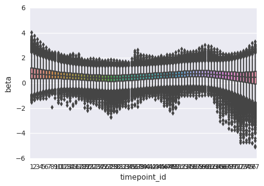
In [32]:
survivalstan.utils.plot_time_betas(models=[testfit], y='beta', x='end_time', coefs=['sex[T.male]'])
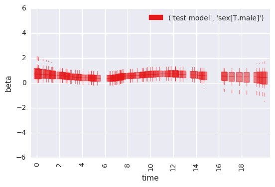
Note that this same plot can be produced by passing data to
plot_time_betas directly.
In [33]:
survivalstan.utils.plot_time_betas(df=first_beta, by=['coef'], y='beta', x='end_time')
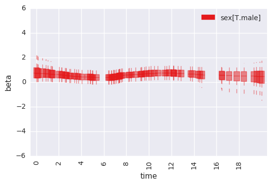
In [ ]: